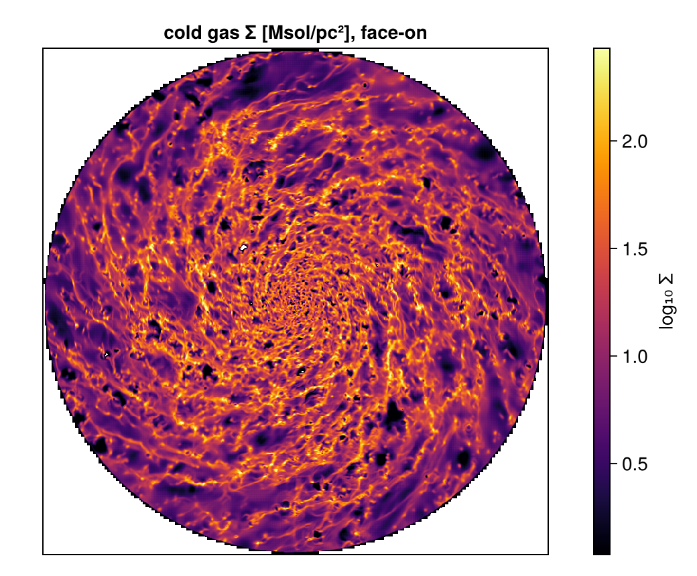

Coming from Other Analysis Tools
This page is also an executable Jupyter notebook: open / download switching_to_mera.ipynb. The notebooks run end-to-end and double as part of Mera's test suite.
If you already post-process simulations, with a Python analysis package, your group's own scripts, or the simulation code's tools, this page maps the concepts you know onto Mera and walks one complete workflow end to end. For the Julia language itself, rather than simulation analysis, see Julia for Simulation Analysis and the Julia Cheat Sheet.
The mental model
Mera's central design choice: data is loaded explicitly into memory as a columnar table that you own. There is no lazy proxy object, after gethydro you hold the actual cells (one row per AMR leaf cell), and every downstream operation is a plain function over that table. You control RAM at load time (level cap, spatial window), not through deferred evaluation.
| Concept you may know | In Mera |
|---|---|
| snapshot / dataset object | info = getinfo(output, path) → metadata only, instant |
| loading data | gethydro(info), getparticles(info), getgravity(info), …, explicit, RAM-aware |
| derived / on-the-fly fields | getvar(gas, :T, :K), computed from the loaded columns; extend with add_field |
| geometric selection | subregion(gas, :sphere; …), shellregion(…), return the same table type, chainable |
| value-based selection | filterdata(gas, …) / getmask, thresholds on any getvar quantity |
| projections | projection(gas, :sd, :Msol_pc2; direction=:z or any line of sight) |
| profiles / phase diagrams | profile(…), phase(…), pdf(…) |
| 2-D slice through the volume | slice(gas, :rho, :g_cm3; …), axis-aligned or along any line of sight |
| loop over snapshots | timeseries(path, d -> …), reads each output, returns a table |
| find structures | clumpfind(gas, …), FoF/watershed on loaded data, scored in Clump Finding |
| animations | getmovie(path, :rho) / savemovie(…) |
| unit handling | a scale factor table: multiply, or pass the unit symbol (:g_cm3, :km_s, :Msol_pc2) |
| saving processed data | savedata/loaddata, LZ4-compressed JLD2, the fast Mera-native round-trip. Julia-side only: it stores the Mera object, so h5py cannot reconstruct the table, use export_vtk, write columns out yourself, or call Mera from Python via JuliaCall |
Why a table of columns, and how to get plain arrays back
The table is not a wrapper you have to work through. Underneath it is a struct of arrays: each quantity is its own contiguous Vector, and the table is sorted on (:level, :cx, :cy, :cz), the AMR level and integer cell coordinates.
Three things follow, and they are the reason for the design:
- You only pay for the columns you touch. Density lives in one contiguous block, so a pass over
:rhoreads only density bytes; the velocities and pressure never enter cache. On the hydro table above, one column is about a ninth of the row data. An array of structs would drag every field of every cell through memory to do the same work. - Cells that are near each other in the grid are near each other in memory, because the table is sorted by level and cell index. That locality is what makes spatial selection and projection fast, rather than any indexing trick layered on top.
- The arrays are always there, and taking them costs nothing.
getvarhands you a plainVector{Float64}, andselect(gas.data, :rho)returns the stored column itself, not a copy or a view type.
rho = getvar(gas, :rho, :g_cm3) # Vector{Float64}, units applied
raw = select(gas.data, :rho) # the stored column itself, no copy
rho isa Vector{Float64} # trueSo nothing is locked away. Hand those vectors to Statistics, to a fitting routine, to BLAS, to your own loop, to any plotting package. Mera's own functions are ordinary functions over these columns, and you can write the same ones yourself when you need something it does not provide.
Two conventions worth internalising on day one:
Every function that takes a range or a radius also takes range_unit, and any length Mera knows is accepted: :Mpc, :kpc, :pc, :mpc, :ly, :Au, :km, :m, :cm, :mm, :μm. Pair it with center= and you can describe a region the way you think about it:
gethydro(info; xrange=[-10, 10], yrange=[-10, 10], zrange=[-2, 2],
center=[:bc], range_unit=:kpc) # a 20 x 20 x 4 kpc slab, box-centred
subregion(gas, :sphere; radius=500, center=[:bc], range_unit=:pc)The one thing to know is the default: range_unit=:standard means fractions of the box (0…1), not physical lengths. So xrange=[0.4, 0.6] is the central 20% of the box, and a sphere of radius=0.2 spans 20% of boxlen. Both forms describe the same region, and center=[:bc] centres on the box in either. Pick whichever reads better; the examples below use physical units.
- Loading is eager, selection is cheap. Load once (possibly windowed), then slice, filter, and project the in-memory table as often as you like, each step returns a normal Mera object.
One complete workflow
The same five steps you would do anywhere: inspect → load → select → measure → map.
using Mera, CairoMakie, Statistics
CairoMakie.activate!()
# This page uses a high-resolution AVALON run (levels 6-13, 5.9 pc finest cell), stored as a
# Mera file so it reloads in one call. Point AVALON at any output of your own, every step
# below is code-blind and works the same on a raw RAMSES/PLUTO/AREPO snapshot via getinfo.
AVALON = get(ENV, "MERA_AVALON", "/Volumes/FASTStorage/Simulations/AVALONpaper/AV05CDhr/mera")
info = infodata(390, AVALON, verbose=false); # metadata only — instant*__ __ _______ ______ _______
| |_| | | _ | | _ |
| | ___| | || | |_| |
| | |___| |_||_| |
| | ___| __ | |
| ||_|| | |___| | | | _ |
|_| |_|_______|___| |_|__| |__|
Mera v1.8.0 | Julia 1.12.7 | 4 threads
[ Info: Mera v1.8.0info already knows everything about the snapshot (levels, box size, which files exist, the unit system) without touching the heavy data. Loading is the explicit step, and the place to bound memory with a level cap and/or a spatial window:
# bound the read: the box is applied while loading, so the rest is never allocated.
# 148M cells, ~12 GB, a few minutes off a Mera file, the full-resolution ISM.
gas = loaddata(390, AVALON, :hydro; xrange=[-12,12], yrange=[-12,12], zrange=[-3,3],
center=[:bc], range_unit=:kpc, verbose=false)
println(length(gas.data), " cells in memory, levels ", gas.lmin, "-", gas.lmax)
usedmemory(gas)148195224 cells in memory, levels 6-13
Memory used: 12.146 GB(12.145861252211034, "GB")That call reads one component. When you want several, loadall reads them all with the same selection, see Pipelines.
Derived quantities are computed on demand from the loaded columns, with units as symbols (every available scale is listed by viewfields(info.scale)):
T = getvar(gas, :T, :K) # temperature, Kelvin
cs = getvar(gas, :cs, :km_s) # sound speed, km/s
println("T range: ", round.(extrema(T), sigdigits=3), " K")
println("cs range: ", round.(extrema(cs), sigdigits=3), " km/s")T range: (11.0, 5.45e8) K
cs range: (0.341, 2400.0) km/sGeometric and value-based selection compose, and each result is again a full Mera object, getvar, projection, profile all work on it unchanged:
disk = subregion(gas, :cylinder; radius=8., height=2., center=[:bc],
range_unit=:kpc, verbose=false) # inner disk, physical units
cold = filterdata(disk, Below(:T, 2e4; unit=:K), verbose=false) # value-space cut on a DERIVED quantity
println("disk: ", length(disk.data), " cells; cold disk: ", length(cold.data), " cells")
println("cold gas mass: ", round(msum(cold, :Msol), sigdigits=4), " Msol")disk: 104072571 cells; cold disk: 86950432 cells
cold gas mass: 4.116e9 MsolMaps and profiles close the loop, a face-on surface-density map of the cold disk and its radial profile:
p = projection(cold, :sd, :Msol_pc2; direction=:faceon, center=[:bc],
pxsize=[0.02, :kpc], verbose=false, show_progress=false)
# empty pixels stay blank instead of being floored to the colormap minimum, and the
# colour range comes from percentiles so a few faint pixels do not wash out the disk
img = [v > 0 ? log10(v) : NaN for v in p.maps[:sd]]
fin = filter(isfinite, img)
fig = Figure(size=(520, 430))
ax = Axis(fig[1, 1], title="cold gas Σ [Msol/pc²], face-on", aspect=DataAspect())
hm = heatmap!(ax, img, colormap=:inferno,
colorrange=(quantile(fin, 0.02), quantile(fin, 0.999)))
Colorbar(fig[1, 2], hm, label="log₁₀ Σ")
hidedecorations!(ax)
fig[Mera] Hint: getvar(:lx) has no `vcenter` — velocities are in the BOX frame.
Pass vcenter=:auto for an object with bulk motion (`center=` sets the origin,
`vcenter=` the frame). On a halo streaming at ~200 km/s this shifted |J| by 34 %.
(shown once per session; verbose(false) silences Mera's messages)
out = mktempdir() # any existing folder
nout = round(Int, info.output) # the file is named after the output number
savedata(cold, out; fmode=:write, verbose=false) # writes output_00300.jld2 (JLD2)
back = loaddata(nout, out, :hydro, verbose=false) # instant reload — no raw-snapshot re-read
fn = joinpath(out, "output_" * lpad(nout, 5, '0') * ".jld2")
println("round-trip ok: ", length(back.data) == length(cold.data), " (",
round(filesize(fn) / 1024^2, digits=1), " MB on disk)")round-trip ok: true (4060.3 MB on disk)Differences to expect, honestly
- Loops are fast, and you can write them. Custom per-cell analysis runs at compiled speed, so there is no need to push work into vectorised library calls to make it quick. Julia compiles on first use, but Mera precompiles its analysis paths at install time, so in practice you do not wait for them. Measured in a fresh session on a small snapshot: the first
projectiontakes 0.05 s and the firstgetvar0.04 s, the same as every later call. Only the readers still carry a one-off cost, about 4 s on the firstgethydro, and none on any call after it. Against a read of minutes that is noise. See Julia for Simulation Analysis. - Units are explicit, not attached. Quantities are plain arrays; units enter as scale factors or unit symbols. This keeps everything zero-overhead but means you choose the unit at each call.
- Getting results back to Python takes a step.
savedatawrites a Julia-side format, so plan the handoff (export_vtk, your own column dump, or JuliaCall) rather than assuming h5py can read it.
Next: Julia for Simulation Analysis, environments, compile-time latency, memory habits and measured multithreading.